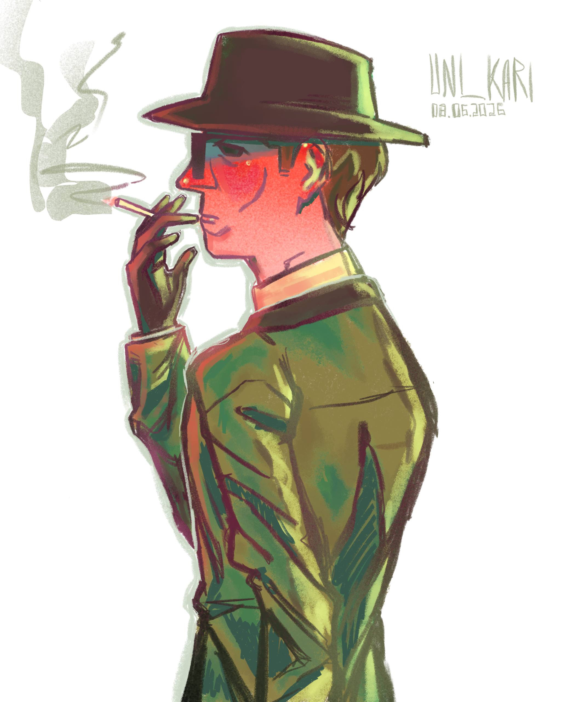
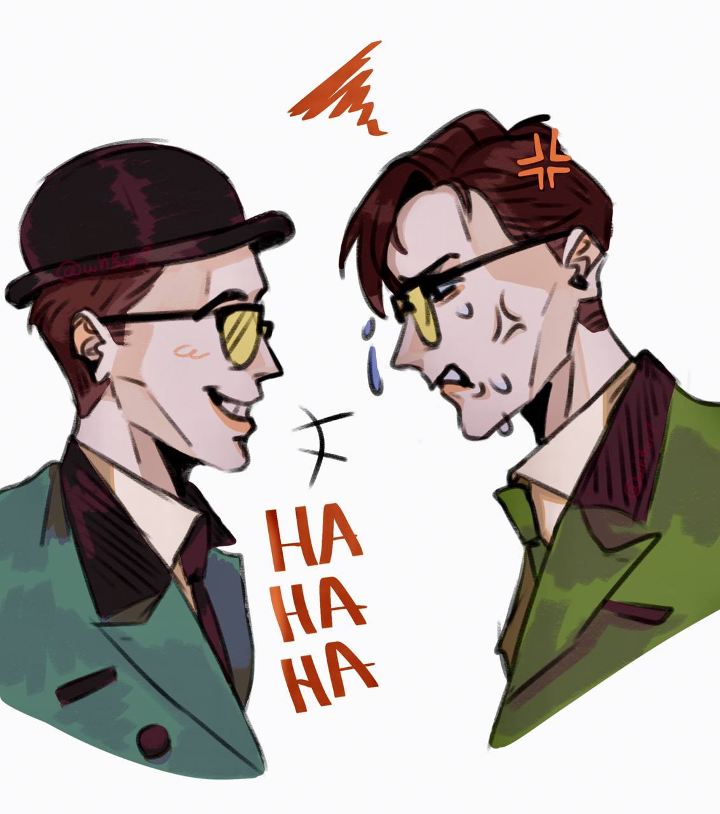

My favorite types of chokers!
(This is included because Ed Nygma has a habit of grabbing people by the neck)

The Riddler is one of the most interesting villains in the Batman universe, not simply because of his intelligence, but because of the way he views the world.
What makes him so fascinating to me is the psychology behind his actions, his obsession with being recognized, and the way he uses riddles to demonstrate his intelligence and superiority.
I generally don't consider myself a Batman fan, but I am willing to share my thoughts on the Riddler from Gotham. I've always found the Riddler to be a very fascinating character. There's something particularly interesting about the way his mind works, how he approaches situations, and what drives him to do the things he does. I think there's much more to his character than simply being a villain who enjoys puzzles.
Edward Nygma aka The Riddler, is portrayed by Cory Michael Smith in the television series Gotham (2014). He plays the role of an enigmatic character who is desperate for his intelligence to be recognized by people. Throughout the series, we get to see different sides of his personality, from his initially awkward and reserved nature to his gradual transformation into a much darker individual. He's interesting because of the complexity of his character and the psychological factors that influence his decisions and behavior.
Here is a website that goes more into depth about Edward Nygma! https://gotham.fandom.com/wiki/Edward_Nygma
My favorite types of chokers!

